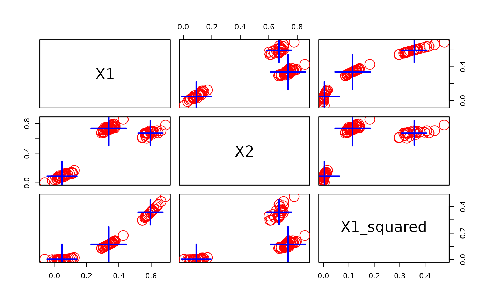

Abstract base classes for all data stream filter (DSF) classes. Data stream filters transform a data stream (DSD).
Usage
DSF(...)
# S3 method for class 'DSF'
reset_stream(dsd, pos = 1)
# S3 method for class 'DSF'
get_points(x, n = 1L, info = TRUE, ...)
# S3 method for class 'DSF'
update(object, dsd = NULL, n = 1L, return = "data", ...)
# S3 method for class 'DSF'
close_stream(dsd, ...)Arguments
- ...
Further arguments passed on.
- dsd
a stream object of class DSD.
- pos
position in the stream.
- x, object
a
DSFobject.- n
number of points to get/use for the update.
- info
return additional columns with information about the data point (e.g., a known cluster assignment).
- return
a character string indicating what update returns. The only value is currently
"data"to return the transformed data. possible values depend on theDST.
Details
The DSF class cannot be instantiated, but it serve as a base
class from which other DSF classes inherit.
Data stream filters transform a DSD data stream. DSF can be used in two ways.
DSD Adapter: When a data stream (
dsd) is specified in the constructor, then the DSF acts as an a adapter for a connected data stream. The DSF implementations inherit the interface from DSD and provide:get_points()get the transformed points.reset_stream()reset the underlying streamclose_stream()close the underlying stream
Stream Transformer: When no data stream (
dsd) is specified in the constructor, then the DSF acts like a DST data stream task and provides:update()to transform the points from a specifiedDSD. It is convenient to use the pipe (magrittr::%>%) to apply one or more filters to data streams (see Examples section).
Methods (by generic)
reset_stream(DSF): reset the attached stream if reset is supported.get_points(DSF): DSD-like interface to get points if the DSF was created with an attached stream.update(DSF): updates with data and returns the filtered data.close_stream(DSF): close the attached stream if close is supported.
See also
Other DSF:
DSF_Convolve(),
DSF_Downsample(),
DSF_ExponentialMA(),
DSF_FeatureSelection(),
DSF_Func(),
DSF_Scale(),
DSF_dplyr()
Other DSD:
DSD(),
DSD_BarsAndGaussians(),
DSD_Benchmark(),
DSD_Cubes(),
DSD_Gaussians(),
DSD_MG(),
DSD_Memory(),
DSD_Mixture(),
DSD_NULL(),
DSD_ReadDB(),
DSD_ReadStream(),
DSD_Target(),
DSD_UniformNoise(),
DSD_mlbenchData(),
DSD_mlbenchGenerator(),
animate_data(),
close_stream(),
get_points(),
plot.DSD(),
reset_stream()
Examples
DSF()
#> DSF is an abstract class and cannot be instantiated!
#>
#> Available subclasses in ‘package:stream’ are:
#> DSF_Convolve,
#> DSF_Downsample,
#> DSF_ExponentialMA,
#> DSF_FeatureSelection,
#> DSF_Func,
#> DSF_Scale,
#> DSF_dplyr
#>
#> To get more information in R Studio, type ‘DSF_’ and hit the Tab key.
# Example 1: Use as a DSD adapter
stream <- DSD_Gaussians(k = 3, d = 2) %>%
DSF_Func(func = function(x) cbind(x, Xsum = x$X1 + x$X2))
stream
#> Gaussian Mixture (d = 2, k = 3)
#> + function: function(x) cbind(x, Xsum = x$X1 + x$X2)
#> Class: DSF_Func, DSF, DSD_R, DSD
get_points(stream, n = 5)
#> X1 X2 Xsum .class
#> 1 0.8955443 0.7822718 1.6778161 1
#> 2 0.2532057 0.2507317 0.5039374 3
#> 3 0.9781787 0.7469918 1.7251705 1
#> 4 0.9777969 0.7473244 1.7251212 1
#> 5 0.9423608 0.7842659 1.7266266 1
# Example 2: Use as a stream transformer
trans <- DSF_Func(func = function(x) cbind(x, Xsum = x$X1 + x$X2))
trans
#> DSF without a specified DSD
#> + function: function(x) cbind(x, Xsum = x$X1 + x$X2)
#> Class: DSF_Func, DSF, DSD_R, DSD
update(trans, stream, n = 5)
#> X1 X2 Xsum Xsum .class
#> 1 0.2941159 0.1970261 0.4911421 0.4911421 3
#> 2 0.4951855 0.7230714 1.2182569 1.2182569 2
#> 3 0.9390349 0.7719578 1.7109927 1.7109927 1
#> 4 0.2742476 0.2157331 0.4899807 0.4899807 3
#> 5 0.8438126 0.7812328 1.6250454 1.6250454 1
# Example 3: Use as a DST preprocessor
clusterer <- DSF_Func(func = function(x) cbind(x, X1_squared = x$X1^2)) %>%
DST_Runner(DSC_Kmeans(k = 3))
clusterer
#> DST pipline runner
#> DSD: DSF without a specified DSD
#> + function: function(x) cbind(x, X1_squared = x$X1^2)
#> DST: k-Means (weighted)
#> Class: DST_Runner, DST
update(clusterer, stream, n = 100)
# Example 5: Specify a complete pipeline DSD -> DSF -> DST
pipeline <- DSD_Gaussians(k = 3, d = 2) %>%
DSF_Func(func = function(x) cbind(x, X1_squared = x$X1^2)) %>%
DST_Runner(DSC_Kmeans(k = 3))
pipeline
#> DST pipline runner
#> DSD: Gaussian Mixture (d = 2, k = 3)
#> + function: function(x) cbind(x, X1_squared = x$X1^2)
#> DST: k-Means (weighted)
#> Class: DST_Runner, DST
update(pipeline, n = 100)
plot(pipeline$dst)
